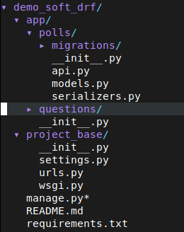
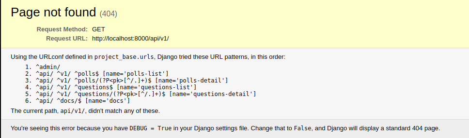
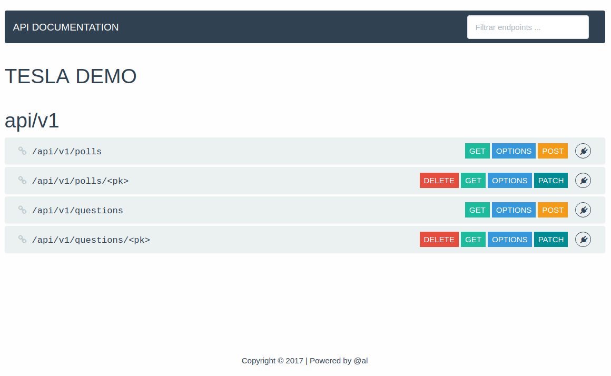

Soft Django Rest Framework es un conjunto de mixins y templates para hacer scaffolding con Django Rest Framework.
Instalación
-
Ejecuta:
pip install soft_drf -
Agrega
'soft_drf'en tus aplicaciones de Django:
INSTALLED_APPS = [
'soft_drf',
]
Uso
Antes de comenzar...
La estructura que usaremos para explicar la funcionalidad de soft_drf es
la siguiente:

-
Las aplicaciones que vayamos creando las colocaremos dentro de la carpeta
app, en este caso sonpollsyquestions. -
Los archivos dentro de cada aplicación son los que normalmente usamos, a excepción del archivo
api.pyen el cual colocaremos todos los viewsets que queramos que sean auto-agregados en las urls del proyecto.
Configuraciones
En nuestro archivo settings tenemos que agregar las siguientes configuraciones:
SHOW_DOCUMENTATION = True
TITLE_DOCUMENTATION = "TESLA DEMO"
La variable SHOW_DOCUMENTATION define si la documentación
que se genera automáticamente debe ser mostrar o no en la url /api/v1/docs
Por otro lado, TITLE_DOCUMENTATION es usada para mostrar el titulo
de tu proyecto en la documentación de la API. Si no defines esta variable el valor por defecto será "TITLE PROJECT BASE".
Definiendo los serializers
Lo primero que debemos definir en nuestro proyecto para crear un API son los serializers. En el caso de los métodos GET
se determina la información que el API va a retornar cuando sean llamados, en los metodos PATCH o POST
se determina la información que nuestra API va a solicitar.
Vamos a entender el código anterior...
- En la linea 1: importamos nuesto modelo Poll. Los modelos se definen tal cual lo harias en un proyecto de Django normal.
- En la linea 3: bien, en esta linea comenzamos a importar ModelSerializer de soft_drf, la cual, tiene definida un serie de instrucciones para que tú no tengas que preocuparte por definir campos en el serializer, dichos campos son obtenidos de tu modelo, los nombres, constrains, etc.
- En la linea 6: definimos el nombre de nuesto serializer y le decimos a Django que va a heredar de ModelSerializer.
- A partir de la linea 7: le decimos a nuestra clase que va a tomar el modelo Poll y los campos (fields) que va a tomar de dicho modelo son todos. Tambien podemos definir campos especificos de nuestro modelo de la sigiente manera:
- Ademas, puedes sobre-escribir todos los métodos que proporciona django rest framework como validate, fiel_validate, save, etc.
Crear viewsets de una manera sencilla
Nuestro archivo api.py esta conformado por dos partes importantes, la primera es la definición de las viewsets
las cuales extienden de una o varias clases de acuerdo a los metodos HTTP que se desean agregar a la API. La segunda parte,
es agregar nuestras viewsets a el router de soft_drf.
Con estas pocas lineas de código logramos crear un API que acepta los métodos HTTP POST,GET, PATCH, y DELETE, pero, analizemos lo que escribimos...
- linea 1,2: importamos nuestro modelo Poll y nuestros serializers que definimos en la sección anterior.
-
linea 4-6: importamos el core de
soft_drf:- mixins: son las clases base las cuales tienen definido un método http de acuerdo al nombre que tiene cada clase. Por ejemplo, ListModelMixin contiene solo el método HTTP GET, CreateModelMixin el método HTTP POST, etc.
- GenericViewSet: esta clase es la base para todas las clases que se encuentran dentro de mixins, así que, es obligarotio que todas nuestas viewset hereden de ella.
- router: el router que importamos es el encargado de reunir todas las API's dentro de nuestro proyecto y del cual se obtendrán automáticamente las urls.
- linea 9-16: Definimos nuestra viewset. En este caso nuestra clase hereda de GenericViewSet, la cual es obligarotio que herede para poder hacer uso de las otras clases. Cada una de las clases que estan dentro de mixins definen un método HTTP especifico, en este caso queremos tener GET, POST, PATCH y DELETE.
- linea 17-21: si deseamos usar un serializer para cada método HTTP podemos pasarlo en metodo_serializer_class, donde metodo puede ser list, retrieve, create o update, de esta manera podemos hacer validaciones más especificas en cada serializer sin tener que escibir todo en un mismo serializer. Si deseamos usar solo un serializer basta con definir la variable serializer_class, el cual es obligatorio definir.
- linea 23: podemos definir los permisos como se hace en un proyecto normal de django rest framework.
- linea 25-27: aquí se define nuestro queryset, normalmente lo que cambia entre metodos es el queryset, así que podemos sobre-escribir este método y filtrar con base en el request o cualquier otra cosa.
-
linea 30-34: registramos nuestra API:
- linea 31: se escribe el nombre que queremos en la url: api/v1/polls
- linea 32: le decimos que viewset sera encargado de tratar esa url.
- linea 33: definimos el base_name de nuestra API, el cual es un nombre único con el cual podremos identificar las API's más adelante.
Agregando las urls del API
En nuestro archivo principal de urls tenemos que agregar las urls que se registraron en nuestro router. Solo debemos agregar lo siguiente:
Probando nuestra API
-
Corremos nuestro proyecto con gunicorn, uwsgi o simplemente con:
python manage.py runserver -
Abrimos
http://localhost:8000/api/v1/y podremos ver las apis que se registraron.

Si vamos ahttp://localhost:8000/api/docspodremos ver la documentación que se genero con base en nuestras API's.
